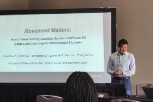
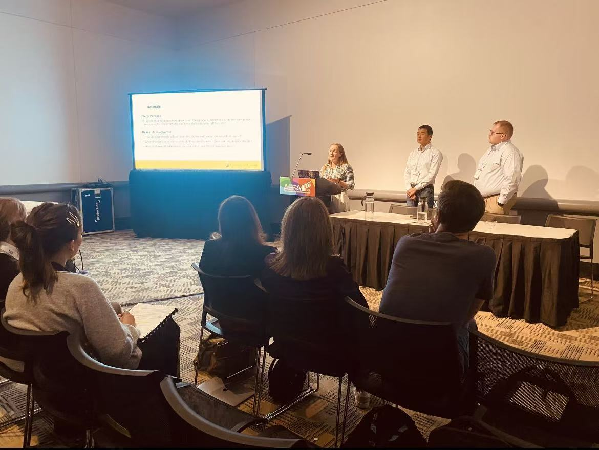
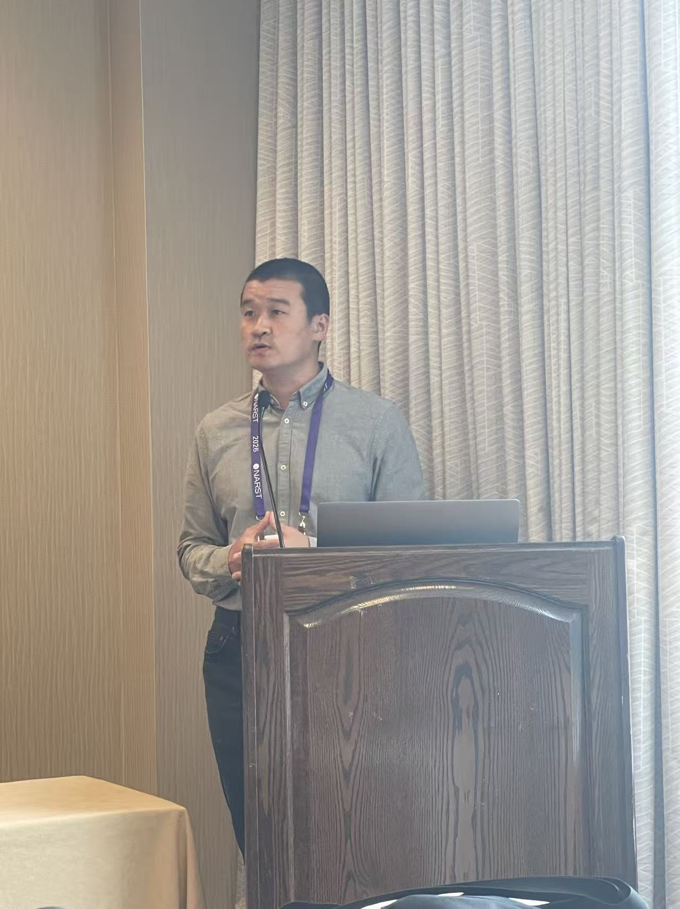

AI literacy
Question formulation, information behavior, reflection, verification, judgment, and responsible participation in AI-supported learning.
Research
I study how learners question, practice, reflect, and exercise agency in technology-rich STEM environments. My work combines learning-system design with mixed methods, usability research, eye tracking, and qualitative inquiry.
Research agenda
Across projects, I ask not only whether a technology works, but how learners experience it, what responsibility remains with them, and what design choices support meaningful learning.
Question formulation, information behavior, reflection, verification, judgment, and responsible participation in AI-supported learning.
VR, MR, and AR environments that connect conceptual understanding with spatial, embodied, and professional practice.
Mixed methods, eye tracking, interviews, performance evidence, and interaction data used to keep human experience and judgment central to design.
Selected research
Ongoing · Three 2026 conference papers accepted
How do learners ask productive questions, evaluate information, reflect with AI, and retain responsibility for decisions?
This program connects two scoping reviews with Time2Reflect, a multi-agent system study. The reviews examine question-centered information behavior and AI-literacy practices across design-thinking phases. Time2Reflect adds a system-design perspective on exploratory reflection and learner agency.
Published and ongoing
A low-risk environment for guided, repeatable practice with photolithography and related cleanroom procedures.
The research progresses from learner confidence and expert-guided redesign to eye tracking, physical-cleanroom follow-up, scaffold fading, and learner-initiated AI.

Published and under review
Immersive, conversational practice designed to supplement preservice nurses’ preparation for patient encounters.
Studies examine usability, self-efficacy, learner experience, transfer-oriented design, and the relationship between realism and learner agency. The system supplements rather than replaces standardized-patient practice.

Published
A mixed-reality and generative-AI environment for embodied learning of U.S. geography.
VirtualGeo investigates how movement, spatial interaction, and conversational support can help international students build geographic knowledge while making design limitations and learner experience visible.

Collaborative research
XR environments for making hazardous-weather science observable, discussable, and actionable.
Related studies examine augmented-reality meteorology, desktop-VR tornado learning, AI-supported interviewing, science communication, and safe learning design around severe weather.
Selected Materials
Public materials documenting research communication across AI literacy, immersive learning, nursing education, engineering, geography, and place-based STEM education.







Scholarship
Published, accepted, and under-review work connected directly to the research programs above.
2026
Bueno-Vesga, J. A., Xu, X., Gu, Y., He, H., Li, S., & Duan, Y.
IEEE Transactions on Visualization and Computer Graphics, 32(5), 4617–4625 · Published
2026
He, H., Xu, X., Li, S., Bueno-Vesga, J. A., Duan, Y., & Gu, Y.
International Journal of Educational Technology in Higher Education, 23, Article 12 · Published
2026
Duan, Y., Xu, X., He, H., Gu, Y., Li, S., & Bueno-Vesga, J.
IEEE AIxVR, 98–107 · Published · Best Paper Nominee
2025
Duan, Y., Xu, X., Wang, F., Shyu, C.-R., Islam, S. K., et al.
IEEE ICALT, 308–312 · Published
2025
Duan, Y., Xu, X., He, H., Li, S., & Gu, Y.
Journal of Interactive Learning Research, 36(1), 83–100 · Published
Under review
Under review
Under review
Accepted for 2026
ALISE 2026
AECT 2026
ALISE 2026